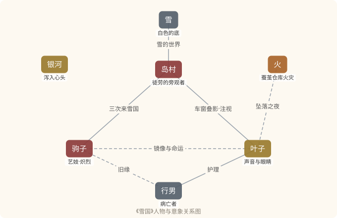

雪国
| 作者 | 川端康成 |
|---|---|
| 成书/出版 | 1935年起断篇发表，1937年大体完成，1948年最终定本出版（Britannica） Snow Country (Yukiguni) — Encyclopaedia Britannica（百科全书） |
| 国别/地区 | 日本 |
| 时代 | 现当代 · 20世纪 |
| 体裁 | 中长篇小说（抒情小说） |
| 语言 | 日语 |

二、创作背景
发表史（Britannica Snow Country 条目）：1935年动笔，1937年完成，1947年最后定稿，1948年以《雪国》为名出版单行本——一部断篇连缀、前后修订十余年的作品（各篇刊期细节待核）。地理背景为越后汤泽温泉（'雪国'即日本海侧多雪之地，通说待核）。
历史背景：写于昭和十年代——日本走向战争与都市现代化的年代，而小说的舞台是温泉町的'界外世界'：没有明确年代、几乎不见战争影子（通说解读）。
文体地位（Britannica）：'a forlorn country geisha'（被弃乡间艺妓）的故事为'his best-known novel'（其最著名小说）；与《千鹤》《山之音》并称其最佳三部（Britannica）。
三、内容脉络
开篇名句：'穿过县界长长的隧道，便是雪国。夜空下一片白茫茫。火车在信号所前停了下来。'（原文意，公有领域；中译依通行版本待核）——岛村坐火车前往雪国温泉町，车窗玻璃上映出叶子的脸与灯火的重叠——'特别是那双眼睛'（原文意，待核）。
岛村与驹子：岛村——有妻室、坐食祖产、研究西方舞蹈却'对舞蹈一无所知'的东京客人，三次来到雪国；驹子——随师学艺的艺妓，认真记日记、勤练三弦、爱得炽烈。岛村觉得她的一切'徒劳'（徒劳，原文词）——'徒劳感'是两人的关键词（通说解读）。
叶子与行男：火车上照顾病人的少女叶子；行男（驹子师傅之子？）病亡于车站——叶子的身份与驹子的过去是小说的暗线（通说解读，学界有讨论）。
结尾：蚕茧仓库火灾之夜，叶子从楼上坠落，岛村仰望银河泻入心头——'银河仿佛哗啦一声泻进他的心里'（结尾原文意，待核）。驹子的存在与叶子的死亡在同一夜完成'美的完成与毁灭'。
四、主要人物表
| 人物 | 身份 | 说明 |
|---|---|---|
| 岛村 | 东京舞蹈研究者 | '坐食祖产'的旁观者——以'徒劳'judgement保持距离的虚无者 |
| 驹子 | 温泉町艺妓 | 洁净而炽烈：日记、三弦、爱——'以认真的徒劳对抗虚无'（通说解读） |
| 叶子 | 护理行男的少女 | 声音与眼睛的化身——最终坠亡于火场，'美的完成' |
| 行男 | 病亡青年 | 驹子师傅之子（身份存疑的暗线） |
| 村长、会计等 | 温泉町众人 | 雪国的民俗背景 |
五、主题与艺术特点
- 徒劳与美：驹子的日记、琴艺、爱情在岛村眼中皆'徒劳'——而正是这种徒劳构成纯粹的美的形态（通说解读）。
- 镜像与虚像：车窗玻璃叠映叶子与灯火——'人不过是透明的虚像'（开篇的意象论，通说待核）——岛村的存在论。
- 雪、火与银河：白（雪）、红（火）、银河（死亡）的意象三部曲——毁灭即完成（通说解读）。
- 物哀与虚无：Britannica 记川端自称'美化死亡，在人与自然的虚无中寻求和谐'——本作是这一美学的最完整实践。
- 艺术特点：'无定形'连歌式结构（短篇连缀、时间跳跃——Britannica：fluid, seemingly 'formless' composition reminiscent of renga）、四季与雪景的描写艺术、留白的心理叙事。
六、影响与评论
- Britannica（Snow Country 条目）：1948年出版，与《千鹤》《山之音》并称川端最佳小说——'a forlorn country geisha'的故事为其代表作。
Snow Country (Yukiguni) — Encyclopaedia Britannica（百科全书） - Britannica（Kawabata 条目）：1968年诺贝尔文学奖；'melancholic lyricism'的文体定位与连歌式结构。
Kawabata Yasunari — Encyclopaedia Britannica（百科全书） - 翻译与传播：赛登斯蒂克（Edward Seidensticker）英译 Snow Country（1956，通说待核）被视为诺奖的直接背景之一（通说待核）。
Kawabata Yasunari — Encyclopaedia Britannica（百科全书） - 对中国与东亚文学的影响：1980年代'川端热'（余华、莫言的自述——通说待核）；新感觉派在中国的回响（穆时英等，通说待核）。
Kawabata Yasunari — Encyclopaedia Britannica（百科全书）
七、阅读建议
- 断篇连缀的结构（各章时间不连续）——不要找连续情节，找意象的累积。
- 岛村视角的'徒劳'judgement 会误导读者低估驹子——读完全篇再回看。
- 无年代、无战争、无社会事件的'真空'舞台是设计（通说解读）。
- 叶渭渠译《雪国》（人民文学出版社/上海书店出版社等多版本）：通行译本。
- 高慧勤译本（《川端康成文集》，中国社会科学出版社，通说待核）：另一选择。
- 英译：Edward Seidensticker, Snow Country（1956，通说待核）。
通读（篇幅不大，约8万字）→ 回读开头'隧道'段与结尾'银河'段 → 对照《伊豆的舞女》看川端的'少女美学'起点 → 讨论驹子与叶子谁是'真正的雪国'。
八、待核实
- 断篇刊期（1935年《文艺春秋》《改造》各刊说）逐条待核。
- 开篇与结尾的逐字核对照叶渭渠/高慧勤译本。
- 赛登斯蒂克英译（1956年 Knopf 说）细节待核。
- '徒劳'（むだ）一词在原文中的出现频率与解读史待核。
本页主要来源
- Snow Country (Yukiguni) — Encyclopaedia Britannica（百科全书）
- Kawabata Yasunari — Encyclopaedia Britannica（百科全书）
川端康成的其他收录作品：雪国